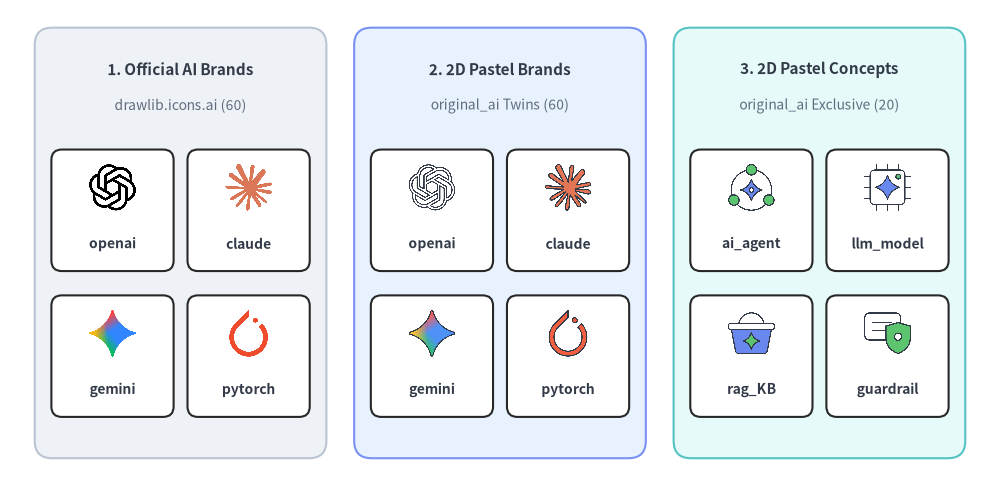
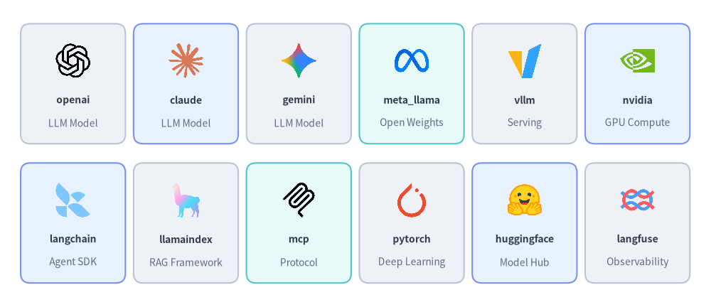
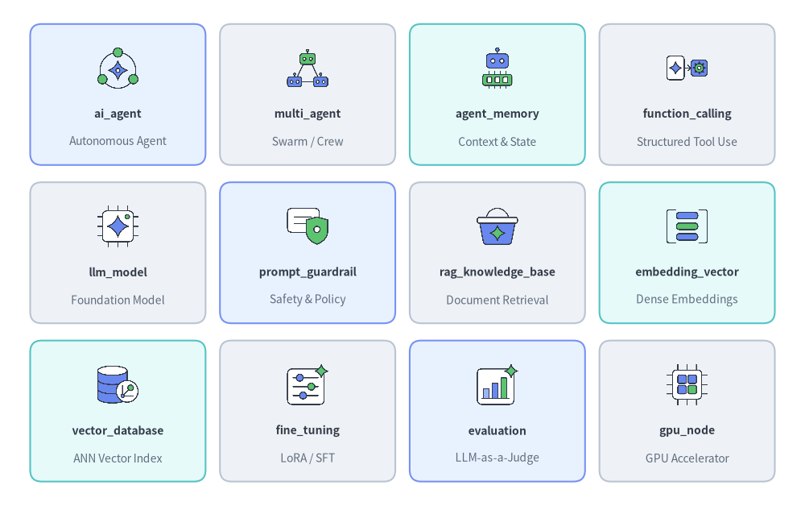
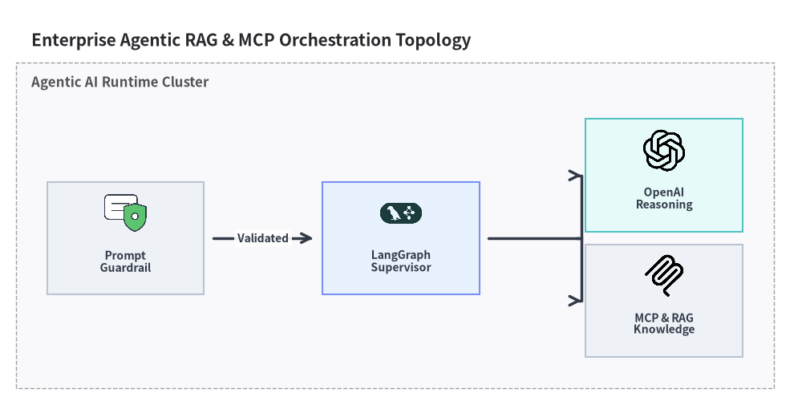

AI・機械学習アイコン
Drawlib は、drawlib.icons.ai（AiIcon）に 60 種の公式 AI・機械学習ブランドアイコンを、drawlib.icons.original_ai（OriginalAiIcon）に 80 種のフラット 2D パステルアイコン（60 種のブランドツイン＋20 種のベンダー中立 AI/LLM/エージェントコンセプトアイコン）を提供しています。ティア間の使い分け指針についてはアイコン概要を、トポロジ図への組み込みについてはアーキテクチャ図を参照してください。

Source Code
from drawlib.canvas import save, setup
from drawlib.icons import ai, original_ai
from drawlib.shapes import rectangle
from drawlib.styles import Styles
from drawlib.text import text
setup(width=144, height=70)
columns = [
(
26.0,
"1. Official AI Brands",
"drawlib.icons.ai (60)",
Styles.Neutral,
[
("openai", ai.openai),
("claude", ai.claude),
("gemini", ai.gemini),
("pytorch", ai.pytorch),
],
),
(
72.0,
"2. 2D Pastel Brands",
"original_ai Twins (60)",
Styles.PrimaryNeutral,
[
("openai", original_ai.openai),
("claude", original_ai.claude),
("gemini", original_ai.gemini),
("pytorch", original_ai.pytorch),
],
),
(
118.0,
"3. 2D Pastel Concepts",
"original_ai Exclusive (20)",
Styles.SecondaryNeutral,
[
("ai_agent", original_ai.ai_agent),
("llm_model", original_ai.llm_model),
("rag_KB", original_ai.rag_knowledge_base),
("guardrail", original_ai.prompt_guardrail),
],
),
]
for cx, title, subtitle, card_style, icons_list in columns:
rectangle((cx, 35.0), width=42.0, height=62.0, style=card_style.patch(shape_r=2.5))
text((cx, 60.0), title, style=Styles.DarkBold.patch(text_size=11.0))
text((cx, 54.8), subtitle, style=Styles.Muted.patch(text_size=10.0))
offsets = [(-9.8, 41.5), (9.8, 41.5), (-9.8, 20.5), (9.8, 20.5)]
sub_card_style = Styles.White.patch(shape_r=1.5, line_width=0.6)
for (dx, iy), (lbl, fn) in zip(offsets, icons_list, strict=True):
ix = cx + dx
rectangle((ix, iy - 1.8), width=17.6, height=17.5, style=sub_card_style)
fn((ix, iy + 1.5), width=7.5, style=Styles.Primary)
text((ix, iy - 6.6), lbl, style=Styles.DarkBold.patch(text_size=10.0))
save()
1. API シグネチャとツインモジュール構成
AI アイコンスイートは、1 対 1 の正規命名規則を共有するツインモジュールペアとして構成されています。
drawlib.icons.ai（AiIconEnum）: 基盤モデル、推論サーバー、エージェントフレームワーク、MLOps プラットフォームを対象とした 60 種の公式ベンダーおよび OSS ブランドアイコン（512×512RGBA PNG）。drawlib.icons.original_ai（OriginalAiIconEnum）: 全 60 種の対応するブランドツインに加え、20 種のベンダー中立 AI/LLM/エージェントコンセプトアイコン（ai_agent、llm_model、rag_knowledge_base、embedding_vector、prompt_guardrailなど）を含む合計 80 種のフラット 2D パステルアイコン（512×512RGBA PNG）。
from drawlib.diagrams.architecture import AiIcon, Node, OriginalAiIcon
from drawlib.icons import ai, original_ai
from drawlib.styles import Styles
# 1. Direct canvas rendering (center-anchored at (cx, cy), 1:1 square aspect ratio)
ai.openai((30, 25), width=9.0, style=Styles.Primary)
original_ai.openai((60, 25), width=9.0, style=Styles.Primary)
original_ai.ai_agent((90, 25), width=9.0, style=Styles.Primary)
# 2. High-level ArchitectureDiagram / SequenceDiagram Enums
llm_node = Node("OpenAI API", width=24, height=18, icon=AiIcon.OPENAI, icon_size=7.5)
agent_node = Node("Router Agent", width=24, height=18, icon=OriginalAiIcon.AI_AGENT, icon_size=7.5)
| 項目 | 公式スイート (drawlib.icons.ai) |
オリジナル 2D パステルスイート (drawlib.icons.original_ai) |
|---|---|---|
| 関数シグネチャ | ai.<name>(xy, width, *, style, variant="default") |
original_ai.<name>(xy, width, *, style, variant="default") |
| ダイアグラム Enum | AiIcon.<NAME>（例: AiIcon.OPENAI） |
OriginalAiIcon.<NAME>（例: OriginalAiIcon.AI_AGENT） |
| 正規アイコン数 | ブランドアイコン 60 種 | 合計 80 種（ブランドツイン 60 種 + コンセプトアイコン 20 種） |
| 座標アンカー | 中央基準 (cx, cy)（halign="center", valign="center"） |
中央基準 (cx, cy)（halign="center", valign="center"） |
| アセットアーカイブ | icon_ai（512×512 RGBA PNG） |
icon_original_ai（512×512 RGBA PNG） |
2. 公式・パステルブランドアイコン一覧とリファレンス (ai & original_ai)
以下に示す 60 種のブランドアイコン名は、drawlib.icons.ai（公式ロゴ）と drawlib.icons.original_ai（対応する 2D パステルブランドツイン）の両方に共通して収録されています。

Source Code
from drawlib.canvas import save, setup
from drawlib.icons import ai
from drawlib.shapes import rectangle
from drawlib.styles import Styles
from drawlib.text import text
setup(width=148, height=64)
row1 = [
("openai", "LLM Model", ai.openai, Styles.Neutral),
("claude", "LLM Model", ai.claude, Styles.PrimaryNeutral),
("gemini", "LLM Model", ai.gemini, Styles.Neutral),
("meta_llama", "Open Weights", ai.meta_llama, Styles.SecondaryNeutral),
("vllm", "Serving", ai.vllm, Styles.Neutral),
("nvidia", "GPU Compute", ai.nvidia, Styles.PrimaryNeutral),
]
row2 = [
("langchain", "Agent SDK", ai.langchain, Styles.PrimaryNeutral),
("llamaindex", "RAG Framework", ai.llamaindex, Styles.Neutral),
("mcp", "Protocol", ai.mcp, Styles.SecondaryNeutral),
("pytorch", "Deep Learning", ai.pytorch, Styles.Neutral),
("huggingface", "Model Hub", ai.huggingface, Styles.PrimaryNeutral),
("langfuse", "Observability", ai.langfuse, Styles.Neutral),
]
for row_idx, items in enumerate([row1, row2]):
cy = 46.5 if row_idx == 0 else 17.5
for col_idx, (name, cat, icon_fn, card_st) in enumerate(items):
cx = 15.2 + col_idx * 23.5
rectangle((cx, cy), width=21.8, height=25.0, style=card_st.patch(shape_r=2))
icon_fn((cx, cy + 4.8), width=8.0, style=Styles.Primary)
text((cx, cy - 3.4), name, style=Styles.DarkBold.patch(text_size=10.0))
text((cx, cy - 8.2), cat, style=Styles.Muted.patch(text_size=10.0))
save()
2.1. 共通ブランドアイコン全 60 種一覧 (ai.<name> & original_ai.<name>)
| カテゴリ | 数 | 正規関数名 (ai.<name> & original_ai.<name>) |
|---|---|---|
| 基盤 LLM プロバイダ・モデルファミリ | 10 | claude, cohere, deepseek, gemini, grok, meta_llama, mistral, openai, perplexity, qwen |
| 推論エンジン・ルータ・GPU クラウド | 13 | fireworks_ai, groq, litellm, modal, nvidia, ollama, openrouter, replicate, runpod, sglang, together_ai, triton, vllm |
| エージェントフレームワーク・プロトコル・オーケストレーション | 14 | a2a, autogen, crewai, dify, haystack, langchain, langgraph, llamaindex, mastra, mcp, n8n, openhands, pydantic_ai, semantic_kernel |
| ディープラーニング・機械学習フレームワーク | 8 | huggingface, jax, jupyter, keras, onnx, pytorch, scikit_learn, tensorflow |
| オブザーバビリティ・評価・MLOps・データ取り込み | 8 | arize_phoenix, braintrust, firecrawl, langfuse, mlflow, ray, tavily, wandb |
| AI コーディング・マルチモーダル音声・UI アプリ | 7 | copilot, cursor, deepgram, elevenlabs, gradio, livekit, streamlit |
3. ベンダー中立コンセプトアイコン一覧とリファレンス (original_ai)
60 種のブランドツインに加え、drawlib.icons.original_ai（OriginalAiIcon）には 20 種の専用ベンダー中立 AI/ML アーキテクチャコンセプトアイコンが収録されており、特定ベンダーに依存しない汎用的な RAG パイプライン、マルチエージェントメモリ、ガードレール、学習ワークフローを図解できます。

Source Code
from drawlib.canvas import save, setup
from drawlib.icons import original_ai
from drawlib.shapes import rectangle
from drawlib.styles import Styles
from drawlib.text import text
setup(width=140, height=88)
rows = [
[
("ai_agent", "Autonomous Agent", original_ai.ai_agent, Styles.PrimaryNeutral),
("multi_agent", "Swarm / Crew", original_ai.multi_agent, Styles.Neutral),
("agent_memory", "Context & State", original_ai.agent_memory, Styles.SecondaryNeutral),
("function_calling", "Structured Tool Use", original_ai.function_calling, Styles.Neutral),
],
[
("llm_model", "Foundation Model", original_ai.llm_model, Styles.Neutral),
("prompt_guardrail", "Safety & Policy", original_ai.prompt_guardrail, Styles.PrimaryNeutral),
("rag_knowledge_base", "Document Retrieval", original_ai.rag_knowledge_base, Styles.Neutral),
("embedding_vector", "Dense Embeddings", original_ai.embedding_vector, Styles.SecondaryNeutral),
],
[
("vector_database", "ANN Vector Index", original_ai.vector_database, Styles.SecondaryNeutral),
("fine_tuning", "LoRA / SFT", original_ai.fine_tuning, Styles.Neutral),
("evaluation", "LLM-as-a-Judge", original_ai.evaluation, Styles.PrimaryNeutral),
("gpu_node", "GPU Accelerator", original_ai.gpu_node, Styles.Neutral),
],
]
for row_idx, items in enumerate(rows):
cy = 71.5 - row_idx * 27.5
for col_idx, (title, sub, icon_fn, card_st) in enumerate(items):
cx = 20.5 + col_idx * 33.0
rectangle((cx, cy), width=30.5, height=24.5, style=card_st.patch(shape_r=2))
icon_fn((cx, cy + 4.6), width=8.0, style=Styles.Primary)
text((cx, cy - 3.4), title, style=Styles.DarkBold.patch(text_size=10.0))
text((cx, cy - 8.2), sub, style=Styles.Muted.patch(text_size=10.0))
save()
3.1. ベンダー中立コンセプトアイコン全 20 種一覧 (original_ai.<name>)
正規関数名 (original_ai.*) |
OriginalAiIcon Enum メンバー |
アーキテクチャ上の役割 |
|---|---|---|
agent_memory |
OriginalAiIcon.AGENT_MEMORY |
短期ワーキングコンテキストおよび長期エピソード記憶（エージェントメモリ） |
ai_agent |
OriginalAiIcon.AI_AGENT |
計画立案とツール実行ループを担う自律推論エージェント |
dataset |
OriginalAiIcon.DATASET |
学習・検証・ベンチマーク用に整備されたデータセットコーパス |
embedding_vector |
OriginalAiIcon.EMBEDDING_VECTOR |
密ベクトルエンコーダおよびセマンティック埋め込み表現 |
evaluation |
OriginalAiIcon.EVALUATION |
LLM-as-a-Judge による自動スコアリングおよびベンチマーク評価 |
feature_store |
OriginalAiIcon.FEATURE_STORE |
オンライン／オフライン統合型の ML 特徴量ストア |
fine_tuning |
OriginalAiIcon.FINE_TUNING |
教師ありファインチューニング（SFT）、LoRA 適応、RLHF ステージ |
function_calling |
OriginalAiIcon.FUNCTION_CALLING |
構造化ツール呼び出しおよび外部 API 実行 |
gpu_node |
OriginalAiIcon.GPU_NODE |
学習・推論向け高密度 GPU コンピュートノード |
inference_endpoint |
OriginalAiIcon.INFERENCE_ENDPOINT |
低レイテンシなモデルサービングゲートウェイおよびトークンストリーミング API |
llm_model |
OriginalAiIcon.LLM_MODEL |
ベンダー中立の大規模言語モデル（LLM）・基盤モデルコア |
model_registry |
OriginalAiIcon.MODEL_REGISTRY |
バージョン管理されたモデル重み・チェックポイント・リネージカタログ |
multi_agent |
OriginalAiIcon.MULTI_AGENT |
スーパーバイザと専門エージェントによるマルチエージェント協調トポロジ |
notebook |
OriginalAiIcon.NOTEBOOK |
対話型のデータサイエンス・機械学習実験ノートブック |
npu_node |
OriginalAiIcon.NPU_NODE |
Neural Processing Unit（NPU）またはカスタム AI ASIC アクセラレータノード |
prompt_guardrail |
OriginalAiIcon.PROMPT_GUARDRAIL |
入出力の安全性フィルタ、PII マスキング、ポリシーガードレール |
prompt_template |
OriginalAiIcon.PROMPT_TEMPLATE |
パラメータ化されたシステムプロンプトおよび Few-shot コンテキストテンプレート |
rag_knowledge_base |
OriginalAiIcon.RAG_KNOWLEDGE_BASE |
インデックス化されたドキュメントチャンクおよび検索拡張（RAG）ナレッジストア |
training_pipeline |
OriginalAiIcon.TRAINING_PIPELINE |
分散事前学習または継続的モデル再学習ワークフロー |
vector_database |
OriginalAiIcon.VECTOR_DATABASE |
近似最近傍探索（ANN）によるセマンティックベクトルストア |
4. 実践的なアーキテクチャ図 (AiIcon & OriginalAiIcon)
以下の例では、ArchitectureDiagram 内でガードレールにベンダー中立コンセプトアイコン（OriginalAiIcon）を、LangGraph・OpenAI・MCP に公式ブランドアイコン（AiIcon）を組み合わせています。
from drawlib.canvas import clear, save, setup
from drawlib.diagrams.architecture import (
AiIcon,
ArchitectureDiagram,
Node,
NodeGroup,
OriginalAiIcon,
)
from drawlib.styles import Styles
clear()
setup(width=128, height=64)
d = ArchitectureDiagram(
node_style=Styles.Primary,
node_text_style=Styles.DarkBold.patch(text_size=10.0),
edge_style=Styles.DarkBold,
edge_text_style=Styles.DarkBold.patch(text_size=10.0),
node_card_style=Styles.Neutral,
title="Enterprise Agentic RAG & MCP Orchestration Topology",
)
cluster = d.add(NodeGroup(title="Agentic AI Runtime Cluster", padding=5.0), xy=(4.0, 4.0))
guard = cluster.add(
Node(
"Prompt\nGuardrail",
width=25,
height=18,
icon=OriginalAiIcon.PROMPT_GUARDRAIL,
icon_size=7.5,
),
xy=(12.0, 18.0),
)
agent = cluster.add(
Node(
"LangGraph\nSupervisor",
width=25,
height=18,
icon=AiIcon.LANGGRAPH,
icon_size=7.5,
card_style=Styles.PrimaryNeutral,
),
xy=(56.0, 18.0),
)
llm = cluster.add(
Node(
"OpenAI\nReasoning",
width=25,
height=18,
icon=AiIcon.OPENAI,
icon_size=7.5,
card_style=Styles.SecondaryNeutral,
),
xy=(98.0, 28.0),
)
rag = cluster.add(
Node(
"MCP & RAG\nKnowledge",
width=25,
height=18,
icon=AiIcon.MCP,
icon_size=7.5,
),
xy=(98.0, 8.0),
)
d.connect(guard, agent, label="Validated", padding=1.5)
agent.fork([llm, rag], at_x=88.0, padding=1.5)
d.draw(xy=(4.0, 4.0))
save()
